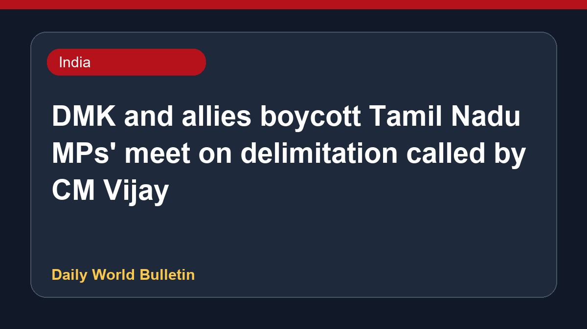

DMK and allies boycott Tamil Nadu MPs' meet on delimitation called by CM Vijay

The Dravida Munnetra Kazhagam, along with AIADMK and other allies, has decided to boycott the all-party meeting convened by Tamil Nadu Chief Minister Vijay to discuss the central government's delimitation proposal. Reports indicate that a significant number of state parliamentarians have opted out of the discussions. A senior party leader stated that any official decision regarding the delimitation bill will be made only after it is formally tabled in Parliament, highlighting opposition to the current consultative process.
Original source: India News Sources
"Charade": DMK Boycotts Vijay's Meet With Tamil Nadu MPs On Delimitation - NDTV ↗
"Charade": DMK Boycotts Vijay's Meet With Tamil Nadu MPs On Delimitation - NDTV ↗